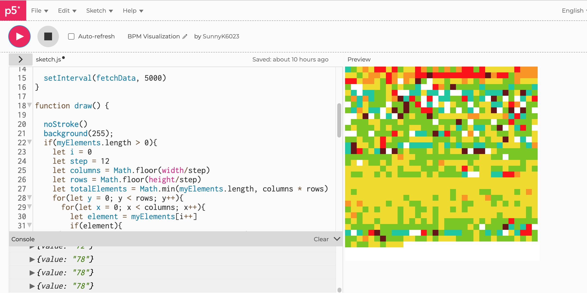

Caffeine Observation The project aims to detect changes in heart rate over a period of time,
specifically before and after consuming coffee. The goal is to measure the heart rate in every hour,
starting before coffee is consumed and continuing for several hours after,
in order to observe the effects of caffeine on heart rate and determine when the body returns to its normal state.
This project will allow us to understand the impact
of caffeine on heart rate and provide insight into how the body metabolizes caffeine. Arduino / Pulse Sensor / Adafruit IO / P5.js #1 Problem: Take time to figure out how to connect from Arduino to Adafruit IO.
Checked the WIFI setting, and the link of Adafruit IO is correct. #2 Problem: The speed of sending the values from the pulse sensor
to Adafruit IO is too fast. (For online setting, it is limited upto 1KB)
It needs to be slower.(delay() Function) Received Data: The raw values-from 9:30am(02.02.2023) to 12:00pm(02.02.2023) I started to drink coffee at 9:30am to 10:00am The values from pulse sensor are divided by colors.from Lowest values(blue) to highest(Dark Red), it shows the progress how long the body takes time to metabolic caffeine.
It shows the caffeine hits the level of raw heartbeating to get higher, then it turns to greenish colors after few hours. Adjust to Arduino code to make raw heartbeating to BPM. @Cai Test and observe my BPM during sleeping. And, set the levels of BPM more(aqua, green, yellow, orange, red, dark red)+ white(The value is too low or too high= wrong)

After sleeping, I start to drink coffee(Ice Latte) at 9:10am. The lines of colors at the top, turns to redish = caffeine affects my BPM.
Also, remove the stroke to see the colors fluently. From aqua to dark red colors, I divided the steps of level of BPM to show the changes fluently.
I recorded 10min of the changes in p5.js and made its speed x10.